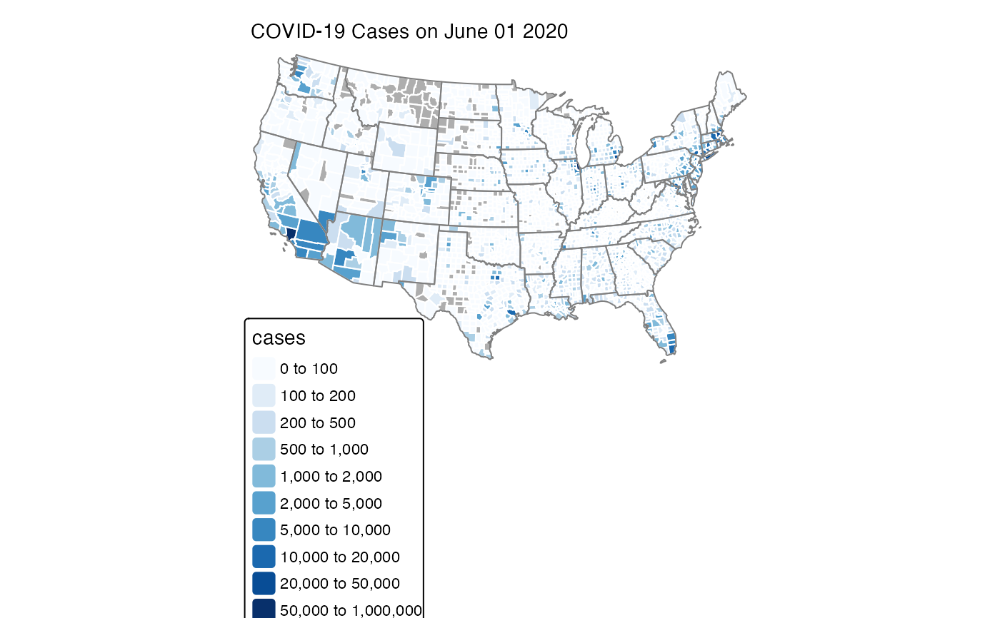
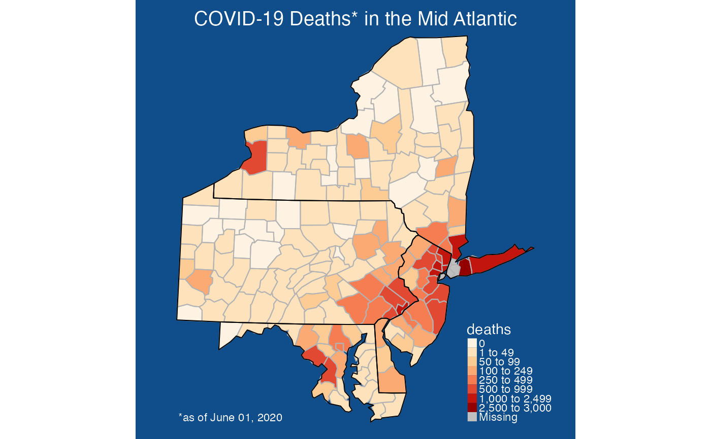

Uses the tmap package to generate a thematic map at the
county level. Input consists of a dataframe with countyFIPS identifiers.
Data to plot is specified with parameter argument. If parameter
is mult-valued, mutliple plots will be generated and displayed as "facets".
The returned object is a tmap ggplot object which can be further modified with tmap or ggplot options.
countyMap(
data = NULL,
parameter = NULL,
state_SFDF = "USCensusStates_02",
county_SFDF = "USCensusCounties_02",
breaks = NULL,
palette = "brewer.blues",
conusOnly = TRUE,
stateCode = NULL,
projection = NULL,
stateBorderColor = "gray50",
countyBorderColor = "white",
title = NULL,
showLegend = TRUE,
legendTitle = NULL,
legendOrientation = c("portrait", "landscape"),
legendPosition = NULL
)Dataframe containing values to plot. This dataframe
must contain a column named countyFIPS with the 5-digit FIPS code.
Name of the column in data to use for coloring the map.
simple features data frame with US states. It's data
@slot must contain a column named stateCode if either
conusOnly = TRUE or the stateCode argument is specified.
simple features data frame with US counties. It's data
@slot must always contain a column named and countyFIPS and a
column named stateCode if either conusOnly = TRUE or the
stateCode argument is specified.
Numeric vector of break points.
A vector of colors or palette name from the cols4all package
(see cols4all::c4a).
Logical specifying Continental US state codes. Ignored when
the stateCode argument is specified.
Vector of state codes to include on the map.
Named projection, e.g. "EPSG:4326" or "WGS84" or proj4string.
Color used for state borders.
Color used for county borders.
Vector of text strings to use as individual plot titles. This must be the same length as 'parameter'.
Logical specifying whether or not to show the legend.
Text string to use as the legend title.
Orientation of the legend. Either "portrait" or "landscape".
A tm_pos object generated with
tmap::tm_pos_in() or
tmap::tm_pos_out().
A ggplot object.
# \donttest{
library(MazamaSpatialPlots)
mazama_initialize()
countyMap(
data = example_US_countyCovid,
parameter = "cases",
breaks = c(0,100,200,500,1000,2000,5000,10000,20000,50000,1e6),
title = "COVID-19 Cases on June 01 2020"
)

countyMap(
data = example_US_countyCovid,
parameter = "deaths",
state_SFDF = USCensusStates_02,
county_SFDF = USCensusCounties_02,
breaks = c(0, 1, 50, 100, 250, 500, 1000, 2500, 3000),
palette = "brewer.or_rd",
stateCode = c( "NY", "PA", "MD", "NJ", "DE"),
stateBorderColor = "black",
countyBorderColor = 'grey70'
) +
tmap::tm_layout(
attr.color = 'white',
bg.color = "dodgerblue4"
) +
tmap::tm_title(
text = "COVID-19 Deaths* in the Mid Atlantic",
size = 2.0,
color = "white",
) +
tmap::tm_credits("*as of June 01, 2020", col = "white", position = "left")

# }